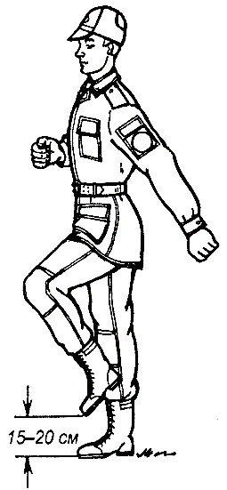

Строевая подготовка
Занятие 1. Строи и управление ими.
Занятие 1. Строевые приемы и движения без оружия.
Занятие 2. Выход военнослужащего из строя и возвращение в строй. Повороты на месте и в движении
Занятие 1. Строевые приемы на месте с оружием.
Перевод автомата из положения «на ремень» в положение «на грудь»
Перевод автомата из положения «на грудь» в положение «на ремень»
Перевод автомата из положения «на ремень» в положение «за спину»
Перевод автомата из положения «за спину» в положение «на ремень»
Тема 1.
Занятие 1. Строи и управление ими.
1. Строй и его элементы. Развернутый одношереножный и двухшереножный строи. Сомкнутый и разомкнутый строи. Походный строй. Управление строем.
Строи отделения и взвода
Содержание данного вопроса изучается на самом первом занятии, иначе в дальнейшем невозможно будет требовать от обучаемых качественного усвоения последующих тем.
Первое, что необходимо усвоить обучаемым – это понять, что такое строй.
Руководитель доводит до обучаемых, что Строй - установленное Уставом размещение военнослужащих, подразделений и воинских частей для их совместных действий в пешем порядке и на машинах.
Командир уточняет, что для отделения и взвода существуют развернутые одношереножный и двухшереножный строи, а также походный строй отделения в колонну по одному и в колонну по два и походный строй взвода – в колонну по три и по четыре.
Для показа элементов одношереножного (двухшереножного) сомкнутого (разомкнутого) и походного строя отделения в колонну по одному (по два), руководитель выстраивает одно отделение в одну (две) шеренги или в колонну по одному (по два) перед строем взвода, разместив обучаемых по росту (ранжиру).
Одношереножный строй (шеренга) и его элементы
Развернутый одношереножный строй отделения
Для построения отделения в развернутый одношереножный строй командир подает команду, например: «Первое отделение, в одну шеренгу – СТАНОВИСЬ». Построив подразделение в одну шеренгу, он уточняет: «Строй, в котором вы сейчас стоите, это развернутый одношереножный строй».
После чего он объясняет, показывает и дает определения: шеренге, флангу и фронту, тыльной стороне строя, интервалу и ширине строя.
Шеренга - строй, в котором военнослужащие размещены один возле другого на одной линии на установленных интервалах.
Линия машин - строй, в котором машины размещены одна возле другой на одной линии.
Фланг - правая (левая) оконечность строя. При поворотах строя названия флангов не изменяются.
Фронт - сторона строя, в которую военнослужащие обращены лицом (машины - лобовой частью).
Тыльная сторона строя - сторона, противоположная фронту.
Интервал - расстояние по фронту между военнослужащими (машинами), подразделениями и воинскими частями.
Командир подчеркивает, что в сомкнутом строю, в котором сейчас находятся обучаемые, интервалы между локтями рядом стоящих солдат равны ширине ладони и приказывает всем установить этот интервал.
Ширина строя - расстояние между флангами.
Походный строй отделения в колонну по одному
Для изучения элементов походного строя отделения руководитель поворачивает отделение направо и уточняет: «Строй, в котором вы сейчас стоите, это походный строй отделения в колонну по одному».
Затем он объясняет, показывает и дает определения: походному строю, колонне, направляющему, замыкающему, дистанции и глубине строя.
Походный строй - строй, в котором подразделение построено в колонну или подразделения в колоннах построены одно за другим на дистанциях, установленных Уставом или командиром.
Походный строй применяется для передвижения подразделений при совершении марша, прохождения торжественным маршем, с песней, а также в других необходимых случаях.
Колонна - строй, в котором военнослужащие расположены в затылок друг другу, а подразделения (машины) - одно за другим на дистанциях, установленных Уставом или командиром.
Колонны могут быть по одному, по два, по три, по четыре и более.
Колонны применяются для построения подразделений и воинских частей в развернутый или походный строй.
Направляющий - военнослужащий (подразделение, машина), движущийся головным в указанном направлении. По направляющему сообразуют свое движение остальные военнослужащие (подразделения, машины).
Замыкающий - военнослужащий (подразделение, машина), движущийся последним в колонне.
Дистанция - расстояние в глубину между военнослужащими (машинами), подразделениями и воинскими частями.
Глубина строя - расстояние от первой шеренги (впереди стоящего военнослужащего) до последней шеренги (позади стоящего военнослужащего), а при действиях на машинах - расстояние от первой линии машин (впереди стоящей машины) до последней линии машин (позади стоящей машины).
Двухшереножный строй и его элементы
Развернутый двухшереножный строй отделения
Для построения отделения в развернутый двухшереножный строй командир подает команду, например: «Первое отделение, в две шеренги – СТАНОВИСЬ». Построив подразделение в две шеренги, он уточняет: «Строй, в котором вы сейчас стоите, это развернутый двухшереножный строй».
В двухшереножном строю командир показывает первую и вторую шеренги и уточняет, что при поворотах строя их название не изменяется.
Он еще раз объясняет, показывает и дает определения: дистанции и глубине строя, дает определение и показать что такое ряд (полный и неполный), объясняет действия военнослужащего неполного ряда при повороте строя кругом.
Двухшереножный строй - строй, в котором военнослужащие одной шеренги расположены в затылок военнослужащим другой шеренги на дистанции одного шага (вытянутой руки, наложенной ладонью на плечо впереди стоящего военнослужащего). Шеренги называются первой и второй. При повороте строя названия шеренг не изменяются.
Ряд - два военнослужащих, стоящих в двухшереножном строю в затылок один другому. Если за военнослужащим первой шеренги не стоит в затылок военнослужащий второй шеренги, такой ряд называется неполным.
При повороте двухшереножного строя кругом военнослужащий неполного ряда переходит во впереди стоящую шеренгу.
Заканчивая изучение данного вопроса, командир говорит о том, что одношереножный и двухшереножный строи могут быть сомкнутыми или разомкнутыми.
В сомкнутом строю, рассмотренном выше, военнослужащие в шеренгах расположены по фронту один от другого на интервалах, равных ширине ладони между локтями.
В разомкнутом строю военнослужащие в шеренгах расположены по фронту один от другого на интервалах в один шаг или на интервалах, указанных командиром.
Для показа разомкнутого строя командир размыкает двухшереножный строй, не указывая (или указывая) интервал и поясняет, что в первом случае военнослужащие размыкаются на один шаг, а во втором на указанное количество шагов.
Для размыкания на один шаг руководитель подает команду, например: «Отделение, вправо (влево, от средины), разом-КНИСЬ (бегом, разом-КНИСЬ)», или указывает количество шагов для размыкания, например: «Отделение, вправо (влево, от средины) на три шага, разом-КНИСЬ (бегом, разом-КНИСЬ)».
Походный строй
Походный строй отделения в колонну по два
Для изучения элементов походного строя отделения в колонну по два руководитель поворачивает отделение направо и уточняет: «Строй, в котором вы сейчас стоите, это походный строй отделения в колонну по два».
Затем он напоминает, показывает и дает определения: колонне, направляющему, замыкающему, дистанции, глубине строя и поясняет что такое походный строй.
Элементы строя взвода командор объясняет, показывает и дает им определения по методике изложенной выше. Для этого он строит взвод в одну, затем в две шеренги, в колонну по три (по четыре).
2. Команды и порядок их подачи. Обязанности солдата перед построением и в строю.
Команды для управления строями
Управление строем осуществляется командами и приказаниями, которые подаются командиром голосом, сигналами и личным примером, а также передаются с помощью технических и подвижных средств.
Команды и приказания могут передаваться по колонне через командиров подразделений и назначенных наблюдателей.
В строю старший командир находится там, откуда ему удобнее командовать. Остальные командиры подают команды, оставаясь на местах, установленных Уставом или старшим командиром.
Командирам подразделений от роты и выше в походном строю батальона и полка разрешается выходить из строя только для подачи команд и проверки их исполнения.
Команда разделяется на предварительную и исполнительную; команды могут быть и только исполнительные.
Предварительная команда подается отчетливо, громко и протяжно, чтобы находящиеся в строю поняли, каких действий от них требует командир.
По всякой предварительной команде военнослужащие, находящиеся в строю, принимают строевую стойку, в движении переходят на строевой шаг, а вне строя поворачиваются в сторону начальника и принимают строевую стойку.
При выполнении приемов с оружием в предварительной команде при необходимости указывается наименование оружия.
Например: «Автоматы на - ГРУДЬ». «Пулеметы на ре-МЕНЬ» и т. д.
Исполнительная команда подается после паузы, громко, отрывисто и четко. По исполнительной команде производится немедленное и точное ее выполнение.
С целью привлечь внимание подразделения или отдельного военнослужащего в предварительной команде при необходимости называется наименование подразделения или звание и фамилия военнослужащего.
Например: «Взвод (3-й взвод) - СТОЙ». «Рядовой Петров, кру-ГОМ».
Голос при подаче команд должен соразмеряться с шириной и глубиной строя, а доклад произноситься четко, без резкого повышения голоса.
Команды, относящиеся ко всем подразделениям, принимаются и немедленно исполняются всеми командирами подразделений.
Чтобы отменить или прекратить выполнение приема, подается команда «ОТСТАВИТЬ». По этой команде принимается положение, которое было до выполнения приема.
При обучении допускаются выполнение указанных в Уставе строевых приемов и движение по разделениям, а также с помощью подготовительных упражнений.
Например: «Автомат на грудь, по разделениям: делай - РАЗ, делай - ДВА, делай - ТРИ». «Направо, по разделениям: делай - РАЗ, делай - ДВА».
Построение подразделений производится по команде «СТАНОВИСЬ», перед которой указывается порядок построения.
Например: «Отделение, в одну шеренгу - СТАНОВИСЬ».
По этой команде военнослужащий должен быстро занять свое место в строю, набрать установленные интервал и дистанцию, принять строевую стойку.
При подаче команд для подразделений родов войск и специальных войск вместо наименований «отделение», «взвод», «рота», «батальон» и «полк» указываются наименования подразделений и воинских частей, принятые в родах войск и в специальных войсках видов Вооруженных Сил.
Обязанность военнослужащего перед построением и в строю (порядок проверки исправности своего оружия, вооружения и военной техники, боеприпасов, средств защиты, шанцевого инструмента, обмундирования и снаряжения; заправка обмундирования, подгонка снаряжения, помощь товарищу в устранении замеченных недостатков; место в строю, порядок его занятия и действия в движении; поведение в строю; передача приказаний и команд)
Командир доводит до обучаемых обязанности военнослужащих перед построением и в строю (ст. 26 СУ ВС РФ – 2006г.).
Военнослужащий обязан:
- проверить исправность закрепленных за ним оружия и боеприпасов, вооружения и военной техники, средств индивидуальной защиты и индивидуальной бронезащиты, шанцевого инструмента, обмундирования и снаряжения;
- аккуратно заправить обмундирование, правильно надеть и подогнать снаряжение, помочь товарищу устранить замеченные недостатки;
- знать свое место в строю, уметь быстро, без суеты занять его; в движении сохранять равнение, установленные интервал и дистанцию; соблюдать требования безопасности; не выходить из строя (машины) без разрешения;
- в строю без разрешения не разговаривать и не курить; быть внимательным к приказаниям и командам своего командира, быстро и точно их выполнять, не мешая другим;
- передавать приказания, команды без искажений, громко и четко.
Разъясняя обязанности военнослужащих перед построением (первые два пункта обязанностей), руководитель доводит до сознания обучаемых, что эти действия выполняются для того, чтобы быть полностью готовым быстро занять свое место в строю по первой команде командира. При этом он поясняет:
- что значит проверить свое оружие и боеприпасы;
- что такое средства индивидуальной защиты и индивидуальной бронезащиты, шанцевый инструмент, снаряжение и как они готовятся;
- что значит аккуратно заправить обмундирование;
- особо подчеркивает, что «помочь товарищу устранить замеченные недостатки» необходимо перед построением, а не в строю.
Объясняя обязанности военнослужащих в строю, руководитель доводит до подчиненных, что каждый, находящийся в строю, постоянно выполняет какую-либо команду, поданную командиром. Это является обязательным условием нахождения в строю, не выполнение же команды командира может повлечь невыполнение задачи подразделением и применение дисциплинарного взыскания к военнослужащему.
Тема 2.
Занятие 1. Строевые приемы и движения без оружия.
1. Строевая стойка. Выполнение команд: «Становись», «Смирно», «Вольно», «Головные уборы снять», «Головные уборы надеть». Строевой и походный шаг. Движение строевым и походным шагом. Выполнение команд на изменение скорости и темпа движения.
Строевая стойка принимается по команде «СТАНОВИСЬ» или «СМИРНО».
Строевая стойка
По этой команде:
- стоять прямо, без напряжения, каблуки поставить вместе, носки выровнять по линии фронта, поставив их на ширину ступни;
- ноги в коленях выпрямить, но не напрягать;
- грудь приподнять, а все тело несколько подать вперед;
- живот подобрать;
- плечи развернуть;
- руки опустить так, чтобы кисти, обращенные ладонями внутрь, были сбоку и посредине бедер, а пальцы полусогнуты и касались бедра;
- голову держать высоко и прямо, не выставляя подбородка;
- смотреть прямо перед собой;
- быть готовым к немедленному действию.
Строевая стойка на месте принимается и без команды:
- при отдании и получении приказа;
- при докладе;
- во время исполнения Государственного гимна Российской Федерации;
- при выполнении воинского приветствия;
- при подаче команд.
Для обучения военнослужащих строевой стойке командир строит подразделение в одну шеренгу и, выйдя перед серединой строя, показывает, как нужно принимать строевую стойку.
Начиная занятие, командир рассказывает, в каких случаях применяется строевая стойка, а затем знакомит военнослужащих с элементами строевой стойки, для чего образцово показывает порядок ее выполнения в целом и по разделениям. Во время показа солдаты должны видеть командира, выполняющего прием, со всех сторон: спереди, сбоку и сзади.
а – проверка правильности положения корпуса; б – положение корпуса при строевой стойке
Закончив показ, командир выстраивает военнослужащих в разомкнутом одношереножном строю и приступает к разучиванию строевой стойки по элементам.
Он показывает подготовительное упражнение – приподнимание груди с подачей корпуса несколько вперед подбиранием живота, развертыванием плеч и опусканием рук посередине бедер.
Командир разъясняет солдатам, что, начиная это упражнение, необходимо сделать глубокий вдох и в таком положении задержать грудную клетку, сделать выдох и продолжать дыхание с приподнятой грудью. Приподняв грудь, корпус тела следует немного подать вперед и подобрать живот, а плечи развернуть. Руки при этом опускаются так, чтобы кисти, обращенные ладонями внутрь, были сбоку и посередине бедер, а пальцы полусогнуты и касались бедер.
Чтобы проверить правильность подачи корпуса несколько вперед, необходимо приподняться на носки (рис. а), а затем, не изменяя наклона корпуса, опуститься на всю ступню (рис. б).
Разучивание этого подготовительного упражнения производится по команде «Грудь приподнять, живот подобрать, плечи развернуть, корпус тела подать вперед, делай – РАЗ, принять первоначальное положение, делай – ДВА». Упражнение выполняется до тех пор, пока каждый обучаемый в отделении (расчете, экипаже) не почувствует отличия положения корпуса при правильной строевой стойке от положения в свободном состоянии.
Отличие строевой стойки от положения «вольно»
Чтобы показать отличия этих положений необходимо использовать зеркало или расположить одну шеренгу против другой, а затем подать команду «Первые номера – стоять вольно, вторые номера – грудь приподнять».
Такая же команда повторяется для первых номеров, а вторые номера стоят в положении «вольно». Проделав несколько раз это упражнение, военнослужащие наглядно убедятся в отличии положения строевой стойки от положения «вольно» (рис. в).
При отработке второго подготовительного упражнения командир показывает, как обучаемые должны держать голову при строевой стойке.
Чтобы проверить правильность положения головы, необходимо принять строевую стойку и, не опуская головы, посмотреть вниз перед собой.
При правильном положении головы военнослужащий должен видеть на плацу самую близкую точку в двух-трех шагах от себя, любое другое положение головы обучаемого будет неправильным. Командир обращает внимание солдат на то, что при правильной строевой стойке грудь всегда находится несколько впереди подбородка.
Отработав подготовительные упражнения, командир приступает к тренировке всех элементов строевой стойки в целом, для чего подает команды «СТАНОВИСЬ», «СМИРНО» или другие команды, например: «Два шага вперед (назад), шагом – МАРШ», «Рядовой Петров. Шаг вперед, шагом – МАРШ» и т. д.
Для проверки правильного выполнения строевой стойки необходимо в ходе тренировки приказать солдатам подняться на носки. Если строевая стойка была принята правильно, то все солдаты отделения легко, без наклона вперед выполнят команду. Можно проверить правильность строевой стойки поднятием носков. Командир подает команду «Поднять носки, делай – РАЗ». Те, кто принял правильно строевую стойку, носки поднять не смогут.
Научив принимать строевую стойку по разделениям, командир тренирует солдат в выполнении приема в целом, для чего подает команды, например: «Отделение, в одну шеренгу – СТАНОВИСЬ» или «Отделение – СМИРНО». Обучаемые выполняют команды, принимают строевую стойку, а командир следит за их действиями и добивается устранения допущенных ими ошибок.
Строевой шаг
Движение строевым шагом осуществляется с темпом -100–120 шагов в минуту. Размер шага – 70 - 80 см.
Движение строевым шагом начинается по команде «Строевым шагом – МАРШ» (в движении «Строевым – МАРШ»).
Движение строевым шагом
По предварительной команде подать корпус несколько вперед, перенести тяжесть его больше на правую ногу, сохраняя устойчивость; по исполнительной команде начать движение с левой ноги полным шагом.
При движении строевым шагом ногу с оттянутым вперед носком выносить на высоту 15–20 см от земли и ставить ее твердо на всю ступню.
Руками, начиная от плеча, производить движения около тела: вперед – сгибая их в локтях так, чтобы кисти поднимались выше пряжки пояса на ширину ладони и на расстоянии ладони от тела, а локоть находился на уровне кисти руки; назад – до отказа в плечевом суставе.
Пальцы рук полусогнуты, голову держать прямо, смотреть перед собой.
При движении походным шагом по команде «СМИРНО» перейти на строевой шаг. Во время обозначения шага на месте по команде «ПРЯМО», подаваемой одновременно с постановкой левой ноги на землю, сделать правой ногой еще один шаг на месте и с левой ноги начать движение полным шагом. При этом первые три шага должны быть строевыми.
Походный шаг
При движении строевым шагом по команде «ВОЛЬНО» идти походным шагом.
Нормальная скорость движения шагом 110–120 шагов в минуту. Размер шага 70–80 см.
При движении походным шагом ногу выносить свободно, не оттягивая носок, и ставить ее на землю, как при обычной ходьбе; руками производить свободные движения около тела.
Движение бегом
Нормальная скорость движения бегом 165–180 шагов в минуту. Размер шага 85–90 см.
Движение бегом начинается по команде «Бегом – МАРШ».
При движении с места по предварительной команде корпус слегка подать вперед, руки полусогнуть, отведя локти несколько назад; по исполнительной команде начать бег с левой ноги, руками производить свободные движения вперед и назад в такт бега.
Для перехода в движении с шага на бег, по предварительной команде руки полусогнуть, отведя локти несколько назад. Исполнительная команда подается одновременно с постановкой левой ноги на землю. По этой команде правой ногой сделать шаг и с левой ноги начать движение бегом.
Для перехода с бега на шаг подается команда «Шагом – МАРШ». Исполнительная команда подается одновременно с постановкой правой ноги на землю. По этой команде сделать еще два шага бегом и с левой ноги начать движение шагом.
Обозначение шага на месте
Обозначение шага на месте производится по команде «На месте, шагом – МАРШ» (в движении – «НА МЕСТЕ»).
По этой команде шаг обозначать подниманием и опусканием ног, при этом ногу поднимать на 15–20 см от земли и ставить ее на всю ступню, начиная с носка; руками производить движения в такт шага.
По команде «ПРЯМО», подаваемой одновременно с постановкой левой ноги на землю, сделать правой ногой еще один шаг на месте и с левой ноги начать движение полным шагом. При этом первые три шага должны быть строевыми.
Обучение шагу на месте по разделениям на два счета

Шаг на месте
Для выполнения шага на месте по разделениям на два счета подается команда: «Шаг на месте, по разделениям; делай – РАЗ, делай – ДВА».
По счету «Делай – РАЗ» – поднять левую ногу на 15–20 см от земли, правой рукой при этом произвести движение так, чтобы кисть ее поднялась выше пряжки пояса (поясного ремня) на ширину ладони и на расстояние ширины ладони от тела; левой рукой – назад до отказа в плечевом суставе.
По счету «Делай – ДВА» – левую ногу поставить на землю с передней части ступни на весь след. Руки опустить, кисти сбоку и посредине бедер.
Повторяя команду, отрабатываются попеременно описанные положения правой и левой ноги (руки).
При этом особое внимание обращается на положение рук и соблюдение строевой стойки.
Походный шаг
Движение походным шагом начинается по команде «Шагом - МАРШ».
По предварительной команде подать корпус несколько вперед, перенести тяжесть его больше на правую ногу, сохраняя устойчивость; по исполнительной команде начать движение с левой ноги полным шагом.
При движении походным шагом ногу выносить свободно, не оттягивая носок, и ставить ее на землю, как при обычной ходьбе; руками производить свободные движения около тела.
Движение бегом
Движение бегом осуществляется с темпом 165-180 шагов в минуту. Размер шага - 85-90 см.
Движение бегом начинается по команде «Бегом - МАРШ».
При движении с места по предварительной команде корпус слегка подать вперед, руки полусогнуть, отведя локти несколько назад; по исполнительной команде начать бег с левой ноги, руками производить свободные движения вперед и назад в такт бега.
Для перехода в движении с шага на бег по предварительной команде руки полусогнуть, отведя локти несколько назад. Исполнительная команда подается одновременно с постановкой левой ноги на землю. По этой команде правой ногой сделать шаг и с левой ноги начать движение бегом.
Для перехода с бега на шаг подается команда «Шагом - МАРШ». Исполнительная команда подается одновременно с постановкой правой ноги на землю. По этой команде сделать еще два шага бегом и с левой ноги начать движение шагом.

Шаг на месте
Обозначение шага на месте
Обозначение шага на месте производится по команде «На месте, шагом - МАРШ» (в движении - «НА МЕСТЕ»).
По этой команде шаг обозначать подниманием и опусканием ног, при этом ногу поднимать на 15-20 см от земли и ставить ее на всю ступню, начиная с носка; руками производить движения в такт шага. По команде «ПРЯМО», подаваемой одновременно с постановкой левой ноги на землю, сделать правой ногой еще один шаг на месте и с левой ноги начать движение полным шагом. При этом первые три шага должны быть строевыми.
Прекращение движения
Для прекращения движения подается команда.
Например: «Рядовой Петров - СТОЙ».
По исполнительной команде, подаваемой одновременно с постановкой на землю правой или левой ноги, сделать еще один шаг и, приставив ногу, принять строевую стойку.
Изменение темпа движения
Для изменения скорости движения подаются команды: «ШИРЕ ШАГ», «КОРОЧЕ ШАГ», «ЧАЩЕ ШАГ», «РЕЖЕ ШАГ», «ПОЛШАГА», «ПОЛНЫЙ ШАГ».
2. Повороты на месте и в движении. Тренировка в движении строевым и походным шагом.
Движение строевым шагом
Строевой шаг применяется при прохождении подразделений торжественным маршем; при выполнении ими воинского приветствия в движении; при подходе военнослужащего к начальнику и при отходе от него; при выходе из строя и возвращении в строй, а также на занятиях по строевой подготовке.
Движение строевым шагом осуществляется с темпом -100–120 шагов в минуту. Размер шага – 70 - 80 см.

Движение строевым шагом
Движение строевым шагом начинается по команде «Строевым шагом – МАРШ» (в движении «Строевым – МАРШ»).
По предварительной команде подать корпус несколько вперед, перенести тяжесть его больше на правую ногу, сохраняя устойчивость; по исполнительной команде начать движение с левой ноги полным шагом.
При движении строевым шагом ногу с оттянутым вперед носком выносить на высоту 15–20 см от земли и ставить ее твердо на всю ступню.
Руками, начиная от плеча, производить движения около тела: вперед – сгибая их в локтях так, чтобы кисти поднимались выше пряжки пояса на ширину ладони и на расстоянии ладони от тела, а локоть находился на уровне кисти руки; назад – до отказа в плечевом суставе.
Пальцы рук полусогнуты, голову держать прямо, смотреть перед собой.
При движении походным шагом по команде «СМИРНО» перейти на строевой шаг. При движении строевым шагом по команде «ВОЛЬНО» идти походным шагом. Во время обозначения шага на месте по команде «ПРЯМО», подаваемой одновременно с постановкой левой ноги на землю, сделать правой ногой еще один шаг на месте и с левой ноги начать движение полным шагом. При этом первые три шага должны быть строевыми.
Последовательность обучения движению строевым шагом:
- тренировка в движении руками;
- тренировка в обозначении шага на месте;
- тренировка в движении строевым шагом на четыре счета;
- тренировка в движении строевым шагом на два счета;
- тренировка в движении строевым шагом в замедленном темпе (со скоростью 50–60 шагов в минуту);
- тренировка в движении строевым шагом в установленном темпе по разметке строевой площадки;
- общая тренировка в движении строевым шагом по плацу без разметки;
- прием зачетов.
Методика разучивание строевого приема
Рассказав о применении строевого шага, командир приступает к его разучиванию с отделением. Обучение движению строевым шагом, как и каждый новый прием, следует начинать с образцового показа и пояснения.
Разучивать строевой шаг рекомендуется по элементам, применяя для этого подготовительные упражнения.
Тренировка в движении руками
Шаг на месте
Движение строевым шагом на четыре счета: а – положение перед началом движения; б – начало движения (первый шаг); в – положение по окончании первого шага
Подготовительное упражнение – движение руками
Для выполнения подготовительного упражнения – движение руками подается команда: «Движение руками, делай – РАЗ, делай – ДВА».
По счету «делай – РАЗ» согнуть правую руку в локте, производя движение ею от плеча около тела так, чтобы кисть руки поднялась на ширину ладони выше пряжки пояса и находилась на расстоянии ладони от тела; одновременно левую руку отвести назад до отказа в плечевом суставе. Пальцы рук должны быть полусогнуты, а локоть правой руки слегка приподнят.
По счету «делай – ДВА» произвести движение левой рукой вперед, а правой, начиная от плеча, назад до отказа.
После каждого счета командир задерживает положение рук обучаемых и исправляет допущенные ими ошибки.
Подготовительное упражнение для рук с шагом на месте
Для выполнения подготовительного упражнения для рук с шагом на месте подаются команды: «На месте, шагом – МАРШ», а затем - «Движение руками с шагом на месте, РАЗ, ДВА».
По счету «РАЗ» сделать шаг на месте левой ногой, поднимая ее согнутой в колене на 15-20 см. от земли и опуская на землю, на всю ступню, начиная с носка. Согнуть правую руку в локте, производя движение ею от плеча около тела так, чтобы кисть руки поднялась на ширину ладони выше пряжки пояса и находилась на расстоянии ладони от тела; одновременно левую руку отвести назад до отказа в плечевом суставе. Пальцы рук должны быть полусогнуты, а локоть правой руки слегка приподнят
По счету «ДВА» аналогично сделать шаг на месте правой ногой.
Подготовительное упражнение - движение строевым шагом по разделениям на четыре счета
Для выполнения подготовительного упражнения – движения строевым шагом по разделениям на четыре счета подается команда: «Строевым шагом, по разделениям на четыре счета, шагом – МАРШ». После команды «Марш» производится счет: «РАЗ, два, три, четыре. РАЗ, два, три, четыре» и так далее. Счет «РАЗ» произносится громко.
По предварительной команде «Шагом» подать корпус несколько вперед, перенося тяжесть тела больше на правую ногу и сохраняя устойчивость.
По исполнительной команде «Марш» и по счету «РАЗ» начать движение с левой ноги, полным шагом, вынося ногу вперед с оттянутым носком.
Ступня должна быть параллельна земле и выносится на высоту 15–20 см. Ногу на землю ставят твердо на всю ступню, отрывая в то же время от земли правую ногу с подтягиванием ее на полшага вперед к пятке левой ноги. Одновременно с шагом сделать движение правой рукой вперед, согнуть ее в локте, производя движение ею от плеча около тела так, чтобы кисть руки поднялась на ширину ладони выше пряжки пояса и находилась на расстоянии ладони от тела; одновременно левую руку отвести назад до отказа в плечевом суставе. Пальцы рук должны быть полусогнуты, а локоть правой руки слегка приподнят. Затем стать на левую ногу с опущенными руками, правая нога прямая, носком почти у самой земли.
По счету «два, три, четыре» сделать выдержку, устраняя в это время допущенные ошибки.
По следующему счету «РАЗ» повторить движение с правой ноги, а по счету «два, три, четыре» снова выдержка и т. д.
Подготовительное упражнение - движение строевым шагом по разделениям на два счета
Для выполнения подготовительного упражнения – движения строевым шагом по разделениям на два счета подается команда: «Строевым шагом, по разделениям на два счета, шагом – МАРШ» и производится счет: «раз, два; раз, два» и т. д.
Под счет «раз» сделать шаг левой ногой вперед с движением рук и остановиться на левой ноге с опущенными у бедер руками.
Под счет «два» сделать небольшую выдержку для устранения замечаний.
По следующему счету «раз» сделать полный шаг правой ногой, как и левой, остановившись на ней с опущенными у бедер руками. Если в процессе выполнения подготовительного упражнения по разделениям на два счета допускаются ошибки, следует повторить еще раз упражнение на четыре счета.
Тренировка в движении строевым шагом в целом
Тренировка начинается с обучения движения строевым шагом в целом с темпом 50– 60 шагов в минуту с последующим наращиванием темпа движения до 110–120 шагов в минуту. Для исправления ошибок рекомендуется с полного темпа движения строевым шагом снова перейти к движению по разделениям на четыре или два счета.
Затем следует перейти к тренировке движения строевым шагом в строю отделения (взвода).
По окончании обучения движению строевым шагом командир принимает зачет от каждого обучаемого.
Характерные ошибки при движении строевым шагом:
- корпус отведен назад;
- нет координации в движении рук и ног;
- голова опущена вниз;
- движение руками около тела производится не от плеча, а за счет сгибания в локтях;
- подъем ноги от земли значительно ниже (выше) 15 см.;
- размер шага меньше (больше) 70–80 см.;
- нога заносится за ногу;
- движение рук вперед производится значительно ниже (выше) установленной высоты, а при движении назад – не до отказа в плечевом суставе.
При обучении движению строевым шагом необходимо добиться, чтобы солдаты при движении не раскачивались из стороны в сторону. Причина раскачивания – неправильная постановка ног при движении: вместо того, чтобы ставить ноги внутренней частью стоп по оси движения, ставят их в стороны, при этом центр тяжести тела с каждым шагом смещается то вправо, то влево.
Если солдат при движении строевым шагом как бы подпрыгивает, ему надо указать на его ошибку и потребовать, чтобы он переносил тяжесть тела с ноги на ногу равномерно, а не рывками. Нельзя допускать при движении заноса одной ноги за другую.
Повороты в движении. Команды, подаваемые при выполнении поворотов
Повороты в движении выполняются по командам: «Напра-ВО», «Нале-ВО», «Кругом – МАРШ».
Для поворота направо (налево) исполнительная команда подается одновременно с постановкой на землю правой (левой) ноги. По этой команде с левой (правой) ноги сделать шаг, повернуться на носке левой (правой) ноги, одновременно с поворотом вынести правую (левую) ногу вперед и продолжать движение в новом направлении.
Для поворота кругом исполнительная команда подается одновременно с постановкой на землю правой ноги. По этой команде сделать еще один шаг левой ногой (по счету раз), вынести правую ногу на полшага вперед и несколько влево и, резко повернувшись в сторону левой руки на носках обеих ног (по счету два), продолжать движение с левой ноги в новом направлении (по счету три). При поворотах движение руками производится в такт шага.
Поворот направо в движении
Поворот налево в движении
Разучивание поворота в движении направо по разделениям на три счета
Для выполнения поворота в движении направо по разделениям на три счета подается команда: «Поворот в движении направо, по разделениям; делай – РАЗ, делай – ДВА, делай – ТРИ».
По счету «делай – РАЗ» сделать строевой шаг левой ногой вперед, произведя взмах руками в такт шага, и остановиться в положении с опущенными руками.
По счету «делай – ДВА» резко повернуться направо на носке левой ноги одновременно с поворотом вынести правую ногу вперед и сделать шаг в новом направлении.
По счету «делай – ТРИ» приставить левую ногу.
Под следующий счет «делай – РАЗ», «делай – ДВА», «делай – ТРИ» прием повторить сначала.
Тренировка поворота в движении направо по разделениям на четыре счета
Для проведения тренировки поворота в движении направо по разделениям на четыре счета с движением три шага вперед подается команда: «Поворот в движении направо на четыре счета, шагом – МАРШ» и производится подсчет: «раз, два, три. ЧЕТЫРЕ».
Под счет «раз, два, три» сделать три строевых шага вперед вдоль линии квадрата.
Под громкий счет «ЧЕТЫРЕ» – сделать поворот направо и шаг.
Под следующий счет «раз, два, три, ЧЕТЫРЕ» упражнение повторить.
Разучивание поворота в движении налево по разделениям на три счета
Для выполнения поворота в движении налево по разделениям на три счета подается команда: «Поворот в движении налево, по разделениям; делай – РАЗ, делай – ДВА, делай – ТРИ».
По счету «делай – РАЗ» сделать строевой шаг левой ногой вперед, а затем правой, произведя взмах руками в такт шага, и остановиться в положении с опущенными руками.
По счету «делай – ДВА» резко повернуться налево на носке правой ноги одновременно с поворотом вынести левую ногу вперед и сделать шаг в новом направлении.
По счету «делай – ТРИ» приставить левую ногу.
Под следующий счет «делай – РАЗ», «делай – ДВА», «делай – ТРИ» прием повторить сначала.
Тренировка поворота в движении налево по разделениям на четыре счета
Для проведения тренировки поворота в движении налево по разделениям на четыре счета с движением четыре шага вперед подается команда: «Поворот в движении налево на четыре счета, шагом – МАРШ» и затем ведется подсчет «РАЗ, два, три, четыре».
Под счет «Раз, два, три, четыре» сделать четыре строевых шага.
Под следующий громкий счет «РАЗ» сделать поворот и шаг.
Под счет «два, три, четыре» продолжают движение.
Под следующий счет «РАЗ, два, три, четыре» упражнение повторяется.
Разучивание поворота в движении кругом по разделениям на четыре счета
Для выполнения поворота в движении кругом по разделениям на четыре счета подается команда: «Поворот в движении кругом, по разделениям; делай – РАЗ, делай – ДВА, делай – ТРИ, делай - ЧЕТЫРЕ».
По счету «делай – РАЗ» сделать строевой шаг левой ногой вперед, произведя взмах руками в такт шага.
По счету «делай – ДВА» вынести правую ногу на полшага вперед и несколько влево, произведя движения руками в такт шага. Одновременно с постановкой носка правой ноги на землю подать тело несколько вперед и на носках обеих ног резко повернуться кругом через левое плечо.
По счету «делай – ТРИ» вынести левую ногу вперед на высоту 15-20 см и зафиксировать положение, при котором правая рука выше пряжки поясного ремня на ширину ладони и на таком же удалении от тела, левая – отведена назад до отказа.
По счету «делай – ЧЕТЫРЕ» энергично приставить правую ногу к левой ноге и принять строевую стойку.
Тренировка поворота в движении кругом по разделениям на четыре счета
Для проведения тренировки поворота в движении кругом по разделениям на четыре счета подается команда: «Поворот в движении кругом на четыре счета, шагом – МАРШ» и затем ведется подсчет «раз, ДВА, три, четыре».
По счету «раз» сделать строевой шаг левой ногой вперед, произведя взмах руками в такт шага.
По счету «ДВА» вынести правую ногу на полшага вперед и несколько влево, произведя движения руками в такт шага. Одновременно с постановкой носка правой ноги на землю подать тело несколько вперед и на носках обеих ног резко повернуться кругом через левое плечо.
По счету «три» вынести левую ногу вперед на высоту 15-20 см, при этом правая рука должна быть выше пряжки поясного ремня на ширину ладони и на таком же удалении от тела, левая – отведена назад до отказа.
По счету «четыре» сделать шаг правой ногой.
Под следующий счет «раз, ДВА, три, четыре» упражнение повторяется.
Характерные ошибки при выполнении поворотов в движении:
- поворот в движении выполнен несвоевременно;
- поворот направо (налево), пол-оборота направо (налево) производится не на носке левой (правой) ноги;
- поворот кругом произведен не на носках обеих ног;
- движение руками при повороте производится не в такт шага.
Занятие 2. Выход военнослужащего из строя и возвращение в строй. Повороты на месте и в движении
1. Выход военнослужащего из строя и возвращение в строй. Подход к начальнику и отход от него.
Выход из строя и подход к начальнику
Выход из строя по вызову выполняется по команде, например: «Рядовой такой-то. КО МНЕ (БЕГОМ КО МНЕ)».
Услышав свою фамилию, военнослужащий отвечает: «Я», и по команде «КО МНЕ» отвечает: «ЕСТЬ». Затем в зависимости от того, с какой стороны находится начальник, военнослужащий делает один-два шага от первой шеренги прямо, на ходу поворачивается в сторону начальника, кратчайшим путем, строевым шагом (бегом) подходит (подбегает) к начальнику и докладывает о прибытии, например: «Товарищ лейтенант. Рядовой Соловьев по вашему приказу прибыл». По окончании доклада руку опускает. Если военнослужащий к начальнику подбегает, то за пять-шесть шагов до него он переходит на строевой шаг. Начальник должен сам повернуться навстречу военнослужащему, вызванному из строя, а не заставлять его заходить вперед.
Разучивание подхода к начальнику по разделениям на три счета
Подход к начальнику: а – остановка; б – доклад
Для выполнения подхода к начальнику по разделениям на три счета подается команда, например: «Для выполнения подхода к начальнику, по разделениям: «делай – РАЗ, делай – ДВА».
По счету «делай – РАЗ» левой ногой сделать строевой шаг вперед, произведя движение руками в такт шага, и зафиксировать положение на левой ноге, руки опущены к бедрам.
По счету «делай – ДВА» приставить правую ногу и одновременно приложить правую руку к головному убору.
По счету «делай – ТРИ» руку опустить к бедру. После этого упражнение повторяется.
Для обучения этим действиям отделение выстраивается в одну шеренгу или в колонну по одному с интервалом или дистанцией между военнослужащими четыре шага.
Разучивание подхода к начальнику на четыре счета с движением вперед на три шага
Для выполнения подхода к начальнику по разделениям на четыре счета с движением вперед на трои шага подается команда, например: «Подход к начальнику, по разделениям на четыре счета, с движением три шага вперед – начи-НАЙ».
По счету «раз, два, три» сделать три строевых шага вперед.
По счету «четыре» приставить правую ногу к левой и одновременно правую руку приложить к головному убору.
По следующему счету «раз, два, три» руку держать у головного убора, а по счету «четыре» опустить.
Упражнение повторяется несколько раз.
Отход от начальника и возвращение в строй
При отходе от начальника для возвращения в строй военнослужащий поворачивается в сторону движения и двигается в строй строевым шагом.
Возвращение военнослужащего в строй производится по команде, например, «Рядовой Иванов. СТАТЬ В СТРОЙ» или только «СТАТЬ В СТРОЙ».
По команде «Рядовой Иванов» военнослужащий, стоящий лицом к строю, услышав свою фамилию, поворачивается лицом к начальнику и отвечает: «Я», а по команде «СТАТЬ В СТРОЙ», если он без оружия или с оружием в положении «за спину», прикладывает руку к головному убору, отвечает: «Есть», делает поворот кругом, с первым шагом опускает руку, двигаясь строевым шагом, кратчайшим путем становится на свое место в строю.
Если подается только команда «СТАТЬ В СТРОЙ», то военнослужащий, стоящий лицом к строю, прикладывает руку к головному убору, отвечает: «Есть», с первым шагом опускает руку и кратчайшим путем, идя строевым шагом, становится на свое место в строю.
Разучивание отхода от начальника по разделениям на четыре счета
Отход от начальника: а – приложить руку к головному убору; б – повернуться кругом; в – приставить ногу; г – шаг вперед; д – опускание руки; е – приставление ноги
Для выполнения отхода от начальнику по разделениям на четыре счета подается команда, например: «Отход от начальника, по разделениям на четыре счета – начи-НАЙ».
По счету «делай – РАЗ» все солдаты отделения прикладывают правую руку к головному убору и отвечают: «Есть».
По счету «делай – ДВА» поворачиваются кругом (направо, налево) и приставляют ногу.
По счету «делай – ТРИ» с первым шагом (с постановкой левой ноги на землю опускают руку.
По счету «делай – ЧЕТЫРЕ» приставляют правую ногу к левой.
В такой последовательности упражнение повторяется под счет командира, а потом под счет самих обучаемых или под барабан. При этом совершенствуются навыки в отработке поворотов кругом, направо и налево.
Когда подход к начальнику и отход от него будут по разделениям разучены, эти действия отрабатываются в комплексе. Тренировка проводится попарно. Командир во время тренировки поочередно вызывает к себе обучаемых и добивается от них правильных и четких действий.
Для привития обучаемым твердых навыков в действиях при подходе к начальнику и отходе от него рекомендуется тренировать их в обычном темпе на девять счетов.
Тренировка подхода к начальнику и отхода от него на девять счетов
Для тренировки отделение выстраивается в колонну по одному с дистанцией в три-четыре шага или попарно один против другого. По команде командира, например «Подход к начальнику и отход от него, на девять счетов, с подсчетом вслух начи-НАЙ».
По счету «раз, два, три» военнослужащие делают три шага вперед, начиная с левой ноги.
По счету «четыре» одновременно с приставлением правой ноги к левой прикладывают правую руку к головному убору.
По счету «пять» опускают руку.
По счету «шесть» вновь прикладывают руку к головному убору.
По счету «семь», «восемь» поворачиваются кругом.
По счету «девять» приставляют правую ногу к левой.
Командир в это время следит за действиями обучаемых и добивается устранения допускаемых ими ошибок.
2. Тренировка в поворотах на месте и в движении.
Повороты на месте
Командир отделения объясняет, что повороты на месте выполняются одиночными военнослужащими на всех занятиях, при подходе к начальнику и отходе от него, а также при постановке в строй, а подразделениями, как на занятиях, так и во время построений и передвижений.
Для обучения поворотам на месте командир выстраивает отделение по периметру строевой площадки (в одну шеренгу с интервалом в четыре шага) и, выйдя на середину строя, показывает поворот в целом в установленном темпе.
Затем он показывает прием по подразделениям и поясняет, что поворот кругом и налево производится в сторону левой руки на левом каблуке и правом носке, а поворот направо – в сторону правой руки на правом каблуке и левом носке.
Все повороты выполняются на два счета: по первому счету надо повернуться, сохраняя правильное положение корпуса, и не сгибая ног в коленях, перенести тяжесть тела на впереди стоящую ногу, по второму счету – кратчайшим путем приставить другую ногу.
Для четкого и красивого поворота на месте необходимо перенести тяжесть тела на ту ногу, в сторону которой делается поворот, с одновременным рывком корпуса в сторону поворота и сильным упором на носок противоположной ноги, сохраняя устойчивое положение туловища. После этого командир показывает прием в медленном темпе с одновременным разъяснением порядка действий по предварительной и исполнительной командам.
Положение ног при повороте: а – направо; б – налево; в - кругом
Поворот направо разучивается по разделениям на два счета.
Показав прием по разделениям, командир командует: «Направо, по разделениям, делай – РАЗ, делай – ДВА» и следит за тем, чтобы обучаемые по первому счету резко повернулись в сторону правой руки на правом каблуке и на левом носке, сохраняли положение корпуса, как при строевой стойке не сгибали ног в коленях, перенося тяжесть тела на впереди стоящую ногу (рис. а). Каблук сзади стоящей ноги и носок впереди стоящей ноги должны быть развернуты так, чтобы после окончания поворота носки оказались развернутыми на ширину ступни. Положение рук должно быть таким, как при строевой стойке.
При неправильном или нечетком выполнении элемента по счету «раз» подастся команда «ОТСТАВИТЬ».
По счету «делай – ДВА» кратчайшим путем приставить левую ногу, не сгибая ее в колене.
Разучив поворот направо по разделениям, командир приступает к разучиванию его в целом. Для этого он подает команду «Напра-ВО» и сопровождает ее подсчетом вслух: «РАЗ, ДВА».
Изучение приема можно продолжать под счет вслух самих обучаемых или под барабан.
При изучении поворота необходимо обратить внимание на то, чтобы он выполнялся не только с помощью ног, но и с резким движением корпуса в сторону поворота с соблюдением всех правил строевой стойки.
Закончив тренировку в выполнении поворота направо, командир показывает в целом, а затем по разделениям поворот налево. Поворот налево также выполняется на два счета.
По команде «Налево, по разделениям, делай – РАЗ» обучаемые должны повернуться на левом каблуке и на правом носке, перенести тяжесть тела на левую ногу, сохраняя правильное положение корпуса, не сгибая ног в коленях и не размахивая во время поворота руками (рис. 6). По счету «делай – ДВА» правую ногу надо кратчайшим путем приставить к левой так, чтобы каблуки были вместе, а носки развернуты на ширину ступни.
После показа и пояснения поворота налево тренировка этого приема проводится в такой же последовательности, как и при изучении поворота направо.
Изучив с подчиненными поворот налево, командир переходит к изучению поворота кругом. Он показывает прием в целом, затем по разделениям на два счета. Далее командир поясняет, что поворот кругом выполняется по команде «Кру-ГОМ» так же, как поворот налево, с той лишь разницей, что разворот корпуса делается на 180° (рис. в).
По команде «КРУГОМ, по разделениям, делан – РАЗ» надо резко повернуться на левом каблуке и на правом носке, не сгибая ног в коленях, подавая корпус немного вперед. При повороте кругом также не допускается размахивание руками вокруг корпуса.
По счету «делай – ДВА» надо кратчайшим путем приставить правую ногу к левой так, чтобы каблуки были вместе, а носки развернуты на ширину ступни. Добившись правильного выполнения приема по разделениям, следует перейти к тренировке обучаемых в выполнении поворота кругом в целом.
При обучении повороту кругом командир должен внимательно следить за тем, чтобы солдаты не срывали преждевременно с места сзади стоящую ногу, а при повороте не допускали колебания корпусом и размахивания руками.
Тренировка в поворотах направо, налево, кругом проводится самостоятельно, попарно и в составе отделения до полного усвоения.
Если солдат выполняет поворот или его элемент неправильно, командир подает команду «ОТСТАВИТЬ», указывает на ошибку и подает команду на повторение приема.
Если отдельные солдаты повторяют ошибку, то командир поочередно выводит их из строя, указывает на ошибку, подает команды, обучает, устраняя в процессе выполнения команды все неправильные действия.
Находящиеся в это время в строю остальные солдаты выполняют прием по командам командира вместе с обучаемым. По окончании обучения солдата, допустившего ошибку, командир приказывает ему встать в строй и вызывает для обучения очередного солдата из строя.
Характерные ошибки при выполнении поворотов на месте:
- преждевременный поворот корпуса по предварительной команде;
- сгибание ног в коленях;
- размахивание руками при повороте;
- наклонение головы вниз;
- опускание груди или выпячивание живота;
- отклонение корпуса назад;
- поворот, не на каблуке, а на своей ступне;
- при повороте кругом неполный разворот;
- приставление ноги не кратчайшим путем и при этом качание корпуса.
3. Выполнение воинского приветствия на месте и в движении.
Выполнение воинского приветствия на месте. Порядок выполнения воинского приветствия вне строя
Выполнение воинского приветствия на месте вне строя без головного убора
Для выполнения воинского приветствия на месте вне строя без головного убора за три-четыре шага до начальника (старшего) повернуться в его сторону, принять строевую
стойку и смотреть ему в лицо, поворачивая вслед за ним голову.
Когда начальник (старший) минует выполняющего воинское приветствие, голову поставить прямо.
Разучивание воинского приветствия на месте вне строя без головного убора по разделениям на два счета
Для выполнения воинского приветствия на месте вне строя без головного убора по разделениям на два счета подается команда, например: «Для выполнения воинского приветствия на месте без головного убора, начальник с фронта (справа, слева, сзади), по разделениям: «делай – РАЗ, делай – ДВА».
При подходе начальника за три-четыре шага по счету «делай – РАЗ» принять положение строевой стойки, если необходимо – повернуться в его сторону, с одновременным приставлением ноги энергично повернуть голову с приподнятым подбородком в сторону начальника, смотреть в лицо начальнику, поворачивая вслед за ним голову.
По счету «делай – ДВА» голову ставят прямо и принимают положение «вольно».
Выполнение воинского приветствия на месте вне строя в головном уборе
Выполнение воинского приветствия на месте вне строя в головном уборе
Для выполнения воинского приветствия на месте вне строя в головном уборе за три-четыре шага до начальника (старшего) повернуться в его сторону, принять строевую стойку, приложить кратчайшим путем правую руку к головному убору так, чтобы пальцы были вместе, ладонь прямая, средний палец касался нижнего края головного убора (у козырька), а локоть был на линии и высоте плеча и смотреть ему в лицо, поворачивая вслед за ним голову. При повороте головы в сторону начальника (старшего) положение руки у головного убора остается без изменения.
Когда начальник (старший) минует выполняющего воинское приветствие, голову поставить прямо и одновременно с этим опустить руку.
Разучивание воинского приветствия на месте вне строя в головном уборе по разделениям на два счета
Для выполнения воинского приветствия на месте вне строя в головном уборе по разделениям на два счета подается команда, например: «Для выполнения воинского приветствия на месте в головном уборе, начальник с фронта (справа, слева, сзади), по разделениям: «делай – РАЗ, делай – ДВА».
При подходе начальника за три-четыре шага по счету «делай – РАЗ» принять положение строевой стойки, если необходимо – повернуться в его сторону, приложить кратчайшим путем правую руку к головному убору так, чтобы пальцы были вместе, ладонь прямая, средний палец касался нижнего края головного убора (у козырька), а локоть был на линии и высоте плеча и смотреть ему в лицо, поворачивая вслед за ним голову. При повороте головы в сторону начальника (старшего) положение руки у головного убора остается без изменения.
По счету «делай – ДВА» голову ставят прямо и принимают положение «вольно».
Характерные ошибки при выполнении воинского приветствия на месте в головном уборе и без него
Воинское приветствие выполнено менее чем за три-четыре шага. Рука к головному убору приложена неправильно:
- пальцы правой руки не вместе, ладонь согнута, средний палец не касается нижнего края головного убора (у козырька);
- изменено положение руки при повороте головы в сторону начальника;
- рука прикладывается к головному убору не кратчайшим путем, а через сторону;
- военнослужащий не повернул голову в сторону начальника и не смотрит ему в лицо.
Выполнение воинского приветствия в движении. Порядок выполнения воинского приветствия вне строя
Выполнение воинского приветствия в движении вне строя без головного убора
Для выполнения воинского приветствия в движении вне строя без головного убора за три-четыре шага до начальника (старшего) одновременно с постановкой ноги прекратить движение руками, повернуть голову в его сторону и, продолжая движение, смотреть ему в лицо. Пройдя начальника (старшего), голову поставить прямо и продолжать движение руками.
Выполнение воинского приветствия без головного убора в движении вне строя

Выполнение воинского приветствия в движении вне строя в головном уборе
Со вторым шагом голову поставить прямо.
При обгоне начальника (старшего) воинское приветствие выполнять с первым шагом обгона.
Разучивание воинского приветствия в движении вне строя без головного убора по разделениям на три (четыре) счета
Для выполнения воинского приветствия на месте вне строя без головного убора по разделениям на три (четыре) счета подается команда: «Воинское приветствие в движении, начальник справа (слева), по разделениям: делай – РАЗ, два, три (четыре)».
По счету «делай – РАЗ» сделать шаг левой ногой, одновременно с постановкой ее на землю прекратить движение руками и повернуть голову в сторону начальника.
По счету «два, три (четыре)» движение продолжать с прижатыми руками и повернутой головой.
По следующему счету «делай – РАЗ» под левую ногу и одновременно с постановкой левой ноги на землю, голову поставить прямо и продолжать движение руками.
По счету «два, три (четыре)» сделав два (три) свободных шага.
По следующему счету «делай – РАЗ», упражнение повторить в таком же порядке с темпом движения 60–70 шагов в минуту.
Выполнение воинского приветствия в движении вне строя в головном уборе
При надетом головном уборе одновременно с постановкой ноги на землю повернуть голову и приложить правую руку к головному убору, левую руку держать неподвижно у бедра; пройдя начальника (старшего), одновременно с постановкой левой ноги на землю голову поставить прямо, а правую руку опустить.
При обгоне начальника (старшего) воинское приветствие выполнять с первым шагом обгона.
Со вторым шагом голову поставить прямо и правую руку опустить.
Разучивание воинского приветствия в движении вне строя в головном уборе по разделениям на шесть счетов
Для выполнения воинского приветствия в движении вне строя в головном уборе по разделениям на шесть счетов подается команда: «Воинское приветствие в движении, начальник справа (слева), по разделениям: делай – РАЗ, два, три, четыре, пять, шесть».
По счету «делай – РАЗ» сделать шаг левой ногой и с постановкой ноги на землю голову повернуть в сторону начальника, одновременно приложить руку к головному убору; левую руку опустить вниз к бедру.
По счету «два, три, четыре» делать шаги правой (левой) ногой; пройдя начальника на один-два шага.
По счету «пять» одновременно с постановкой левой ноги на землю голову поставить прямо, правую руку опустить от головного убора вниз.
По счету «шесть» правую ногу, приставить к левой, а правую руку опустить к бедру.
Выполнение воинского приветствия при обгоне начальника без головного убора
При обгоне начальника воинское приветствие без головного убора отдается следующим образом: на первом шаге обгона с постановкой ноги на землю прекратить движение руками, энергично опустить их вдоль тела, одновременно повернуть голову с приподнятым подбородком в сторону начальника. На втором шаге голову поставить прямо и продолжить движение руками в такт шага.
Выполнение воинского приветствия при обгоне начальника в головном уборе
Выполнение воинского приветствия при обгоне начальника в головном уборе
При обгоне начальника воинское приветствие в головном уборе отдается следующим образом: на первом шаге обгона с постановкой ноги на землю прекратить движение руками, энергично опустить их вдоль тела, повернуть голову с приподнятым подбородком в сторону начальника. Одновременно с поворотом головы приложить правую руку к головному убору, левую держать вдоль тела. На втором шаге голову поставить прямо, правую руку опустить и продолжить движение руками в такт шага.
Характерные ошибки при выполнении воинского приветствия в движении в головном уборе и без него:
- воинское приветствие выполнено менее чем за три-четыре шага;
- рука к головному убору приложена неправильно:
- пальцы правой руки не вместе, ладонь согнута, средний палец не касается нижнего края головного убора (у козырька);
- изменено положение руки при повороте головы в сторону начальника;
- рука прикладывается к головному убору не кратчайшим путем, а через сторону;
- военнослужащий не повернул голову в сторону начальника и не смотрит ему в лицо;
- вместе с поворотом головы поворачивают корпус;
- вначале поворачивают голову, а затем прикладывают (опускают) руку.
[В движении](#2-повороты-на-месте-и-в-движении-тренировка-в-движении-строевым-и-походным-шагом) ### Тема 3. #### Занятие 1. Строевые приемы на месте с оружием.Выполнение приемов с оружием на месте
В положении «на ремень» автомат берут при построениях, на марше в пешем строю, часовые на посту (в дневное время) и в других случаях,
В положении «на грудь» автомат носят на марше в пешем строю, при прохождении торжественным маршем и при несении службы часовым почетного караула.
В положении «за спину» автомат носят на марше в пешем строю, а также при выполнении работ, например, при тушении пожара и т. д.
1. Выполнение приема «ремень – отпустить (подтянуть)»
Отпускание (подтягивание) ремня
Выполнение приема «ремень – отпустить (подтянуть)»
При необходимости отпустить (подтянуть) ремень подается команда «Ремень – ОТПУСТИТЬ (ПОДТЯНУТЬ)». По команде «Ремень» автоматы взять в правую руку, пулеметы – к ноге.
По команде «ОТПУСТИТЬ (ПОДТЯНУТЬ)»:
- сделать пол-оборота направо (рис. а);
- одновременно отставить левую ногу на шаг влево и, наклонившись вперед, упереть оружие прикладом в стопу левой ноги (рис. б);
- оружие стволом положить на изгиб правого локтя;
- ноги в коленях не сгибать;
- удерживая правой рукой пряжку ремня, левой рукой подтянуть (отпустить) ремень;
- самостоятельно принять строевую стойку.
Разучивание отпусканию (подтягиванию) ремня по разделениям на семь счетов
Для отпускания (подтягивания) ремня по разделениям на семь счетов подается команда: «Ремень отпустить (подтянуть), по разделениям; делай – РАЗ, делай – ДВА, делай – ТРИ и т.д.».
По счету «делай – РАЗ» подать правую руку по ремень несколько вверх, снять автомат с плеча и, подхватив его левой рукой за цевье и ствольную накладку держать перед собой вертикально магазином влево, дульным срезом на высоте подбородка.
По счету «делай – ДВА» взять оружие правой рукой за цевье и ствольную накладку выше левой кисти.
По счету «делай – «ТРИ» левую руку опустить к левому бедру, а правую с автоматом – к правому бедру.
По счету «делай – ЧЕТЫРЕ» сделать пол-оборота направо и одновременно отставить левую ногу на один шаг влево так, чтобы ступени обеих ног были параллельны.
По счету «делай – ПЯТЬ», наклонившись вперед, одновременно упереть оружие прикладом в ступню левой ноги, ствол положить на изгиб правого локтя, ноги в коленях не сгибать; удерживая правой рукой пряжку ремня, левой рукой отпустить (подтянуть) ремень.
По счету «делай – ШЕСТЬ» выпрямиться, сделать пол-оборота налево и приставить левую ногу к правой, автомат держать в правой руке у бедра.
По счету «делай – СЕМЬ» автомат закинуть за правое плечо в положение «на ремень», а левую руку отпустить к бедру и самостоятельно принять строевую стойку.
Тренировка солдат в выполнении приемов может проводиться индивидуально, попарно или в составе отделения по команде командира.
2. Перевод автомата из положения «на ремень» в положение «на грудь»
Перевод автомата из положения «на ремень» в положение «на грудь»
Автомат из положения «на ремень» в положение «на грудь» берется по команде «Автомат на – ГРУДЬ».
Выполнение приема «на грудь» из положения «на ремень»
По исполнительной команде необходимо:
- подать правую руку по ремню несколько вверх, снять автомат с плеча и, подхватив его левой рукой за цевье и ствольную накладку, держать перед собой вертикально магазином влево, дульным срезом на высоте подбородка (рис. а);
- правой рукой отвести ремень вправо и перехватить его ладонью снизу так, чтобы пальцы были полусогнуты и обращены к себе; одновременно продеть под ремень локоть правой руки (рис. б);
- закинуть ремень за голову; взять автомат правой рукой за шейку приклада, а левую руку быстро опустить (рис. в).
Разучивание приема перевода автомата из положения «на ремень» в положение «на грудь» по разделениям на три счета
Для выполнения приема по разделениям на три счета подается команда: «Автомат на грудь, по разделениям: делай – РАЗ, делай – ДВА, делай – ТРИ».
По счету «делай – РАЗ» подать правую руку по ремню несколько вверх, снять автомат с плеча и, подхватив его левой рукой за цевье и ствольную накладку, держать перед собой вертикально магазином влево, дульным срезом на высоте подбородка. При выполнении действия по первому счету следует обратить особое внимание на то, чтобы солдаты, снимая правой рукой автомат с плеча, корпус не сгибали, соблюдали правила строевой стойки и не удаляли автомат от корпуса. Эти действия нужно вначале выполнять в медленном темпе, а затем темп постепенно увеличивать. Когда действия по первому счету солдаты будут выполнять правильно, командир переходит к обучению действиям по второму и третьему счету.
По счету «делай – ДВА» правой рукой отвести ремень вправо и перехватить его ладонью снизу так, чтобы пальцы были полусогнуты и обращены к себе, одновременно продеть под ремень локоть правой руки.
По счету «делай – ТРИ» закинуть ремень за голову и взять автомат правой рукой за шейку приклада, а левую руку быстро опустить. При обучении действиям, выполняемым по третьему счету, необходимо следить за тем, чтобы солдаты, закидывая ремень за голову, правую руку с ремнем поднимали как можно выше, а забросив ремень, быстро переносили ее на шейку приклада, левой рукой поддерживали автомат, пока он не повиснет на ремне, а потом быстро опускали левую руку вниз.
Характерные ошибки при выполнении приема «Автомат на – ГРУДЬ»:
- приемы выполняются с искажением уставных требований;
- произошло падение головного убора;
- возникла необходимость подачи команды «заправиться» после выполнения приема;
- нарушено положения строевой стойки.
3. Перевод автомата из положения «на грудь» в положение «на ремень»
Перевод автомата из положения «на грудь» в положение «на ремень»
Автомат из положения «на грудь» в положение «на ремень» берется по команде «На ре-МЕНЬ».

Выполнение приема «на ремень» из положения «на грудь»
По исполнительной команде необходимо:
- левой рукой взять автомат за цевье и ствольную накладку снизу и, одновременно подавая его несколько вперед вверх, вывести правую руку из-под ремня, взяться ею за шейку приклада и держать автомат, как показано на рис. а;
- поднимая автомат вверх, перекинуть ремень через голову и держать автомат перед собой вертикально магазином влево, дульным срезом на высоте подбородка (рис. б);
- правой рукой взять ремень за его верхнюю часть и закинуть автомат за правое плечо в положение «на ремень», а левую руку быстро опустить (рис. в).
Разучивание приема перевода автомата из положения «на грудь» в положение «на ремень» по разделениям на три счета
Для выполнения приема по разделениям на три счета подается команда: «Автомат на ремень, по разделениям: делай – РАЗ, делай – ДВА, делай – ТРИ».
По счету «делай – РАЗ» левой рукой взять автомат за цевье и ствольную накладку снизу и, одновременно подавая автомат несколько вперед вверх, вывести правую руку из-под ремня, взяться ею за шейку приклада и удерживать автомат правой рукой за шейку приклада, левой – за цевье у груди.
По счету «делай – ДВА», приподнимая автомат вверх, перекинуть ремень через голову и держать автомат перед собой вертикально магазином влево, дульным срезом на высоте подбородка. Изучая этот прием, необходимо следить за тем, чтобы солдаты не наклоняли корпус и голову, а приподнимали автомат как можно выше, чтобы не задеть ремнем головной убор.
По счету «делай – ТРИ» правой рукой взять ремень за его верхнюю часть и закинуть автомат за правое плечо в положении «на ремень», а левую руку быстро опустить к бедру.
При обучении этому приему необходимо следить за правильным закидыванием автомата левой рукой за плечо. Обучаемый должен, не поворачивая корпуса, резким движением левой руки вправо и назад направить автомат за правое плечо. В момент, когда автомат находится на лету, кисть правой руки скользит по ремню вниз, солдат натягивает ремень и тем самым исключает возможность ушиба себя стволом, а локтем не дает автомату выйти из-за плеча.
Характерные ошибки при выполнении приема «на ре – МЕНЬ»:
- прием выполняется с искажением уставных требований;
- произошло падение головного убора;
- возникла необходимость подачи команды «заправиться» после выполнения приема;
- нарушено положения строевой стойки.
4. Перевод автомата из положения «на ремень» в положение «за спину»

Автомат в положении «за спину»
Перевод автомата из положения «на ремень» в положение «за спину»
Автомат из положения «на ремень» в положение «за спину» берется по команде «Оружие – ЗА СПИНУ».
По исполнительной команде необходимо:
- левой рукой взять ремень несколько ниже правого плеча, а правой рукой одновременно взяться за приклад;
- правой рукой приподнять оружие вверх, а левой рукой закинуть ремень за голову на левое плечо;
- оружие и руки быстро опустить.
Автомат в положение «за спину» берется без штыка-ножа.
Разучивание приема перевода автомата из положения «на ремень» в положение «за спину» по разделениям на два счета
Для выполнения приема по разделениям на два счета подается команда: «Оружие за спину, по разделениям: делай – РАЗ, делай – ДВА».
По счету «делай – РАЗ» левой рукой взять ремень несколько ниже правого плеча, а правой рукой одновременно взяться за приклад внизу.
По счету «делай – ДВА» правой рукой приподнять автомат вверх, а левой закинуть ремень за голову на плечо, автомат и руки быстро опустить.
Ручной пулемет в положение «за спину» берется как удобнее.
Характерные ошибки при выполнении приема «за спину»:
- приемы выполняются с искажением уставных требований;
- падение головного убора;
- необходимость подачи команды «заправиться» после выполнения каждого приема;
- нарушение положения строевой стойки.

Автомат в положении «за спину»
5. Перевод автомата из положения «за спину» в положение «на ремень»
Перевод автомата из положения «за спину» в положение «на ремень»
Автомат из положения «за спину» в положение «на ремень» берется по команде «Оружие – на ре-МЕНЬ».
По исполнительной команде необходимо:
- левой рукой взять ремень несколько ниже левого плеча, а правой рукой одновременно взяться за приклад;
правой рукой оружие приподнять, а левой рукой перекинуть ремень через голову на правое плечо, ремень взять правой рукой, как показано на рисунке, левую руку быстро опустить.
Разучивание приема перевода автомата из положения «за спину» в положение «на ремень» по разделениям на два счета
Для выполнения приема по разделениям на два счета подается команда: ««Оружие – на ремень, по разделениям: делай – РАЗ, делай – ДВА».
По счету «делай – РАЗ» левой рукой взять ремень несколько ниже левого плеча, а правой одновременно взяться за приклад.
По счету «делай - ДВА» правой рукой автомат приподнять, а левой перекинуть ремень через голову на правое плечо и автомат опустить: ремень взять правой рукой, а левую руку быстро опустить и принять строевую стойку.
Характерные ошибки при выполнении приема «на ремень»:
- приемы выполняются с искажением уставных требований;
- падение головного убора;
- необходимость подачи команды «заправиться» после выполнения каждого приема;
- нарушение положения строевой стойки.